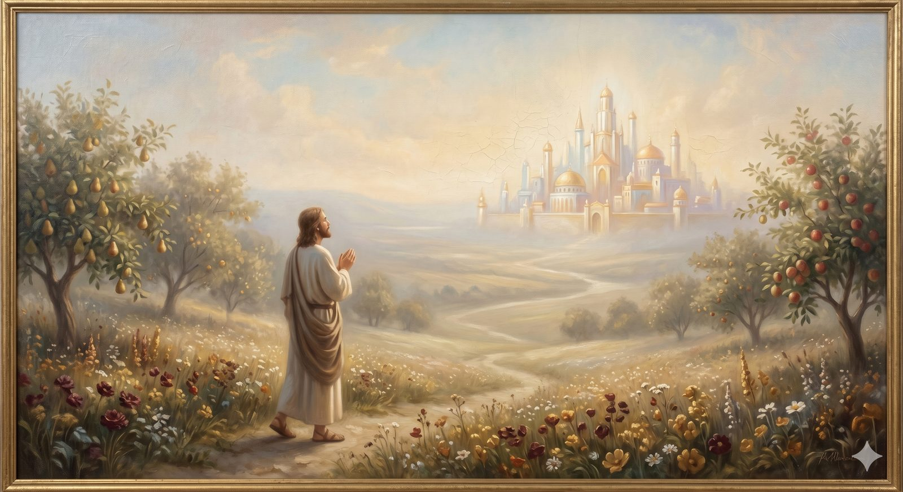

Holy Wonder
A 30-day devotional on the fear of God and worship — reverence and joy held together, learned in the bright air near the City.
"Let us be thankful and so worship God acceptably with reverence and awe, for our God is a consuming fire." Hebrews 12:28–29 (ESV)
In the Land of Beulah the air itself has changed. The sun shines night and day; the pilgrims are within sight of the Celestial City and can hear, on the wind, voices from within it; and the country is so sweet that they walk it caught between two things that here, at last, belong together — they tremble, and they rejoice. This devotional is a study in that doubled response. It is thirty days on the fear of God and the life of worship, and its whole burden is that these two — reverence and gladness — were never meant to be pulled apart.
We tend to imagine the fear of God and the love of God as opposite ends of a rope, so that to grow in one is to lose the other. But Beulah teaches otherwise. The fear of the Lord is not the opposite of love — it is love's truest form, the reverence that comes from seeing clearly who God is and who we are before him. And worship is simply what that clear seeing produces. These thirty days move, as worship itself does, from seeing God's character to offering back the whole of life.
How to use these thirty days
Take one day at a time, in order, or begin wherever you are. Each day gives you a short passage of Scripture, a few paragraphs to help it land, a way to put it into practice, and a question to sit with. The aim is not to feel reverent on cue, but to see — for worship is always produced by seeing God, never worked up by trying.
A reverence with no joy curdles into dread; a joy with no reverence shrinks God to a comfortable friend. Holy wonder is the trembling gladness that sees both at once.
The thirty days, in order:
Section 1 · Who Is This God?
Section 2 · What Does “Fear” Actually Mean?
Section 3 · What Worship Actually Is
Section 4 · What Gets in the Way
Section 5 · Growing into Worship
Section 6 · A Life of Worship
Begin where the whole study begins: not with our response, but with the God who is worthy of it.